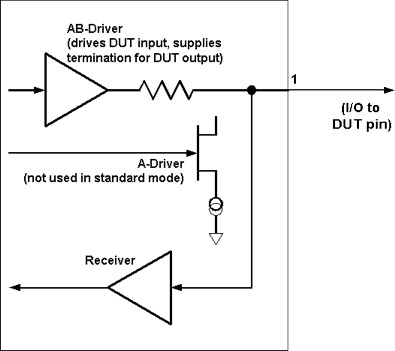

Standard pin drivers
The pin drivers in HSM Series test systems can be set up (in the pin configuration window) in standard mode only. These choices determine how the AB and A drivers are used.
In the illustration below, a pin is set up as an I/O pin in standard mode. In this mode, the A-driver is not used. The AB-driver is used to drive the DUT input, and supplies the termination voltage Vt to the DUT output during compare actions.
